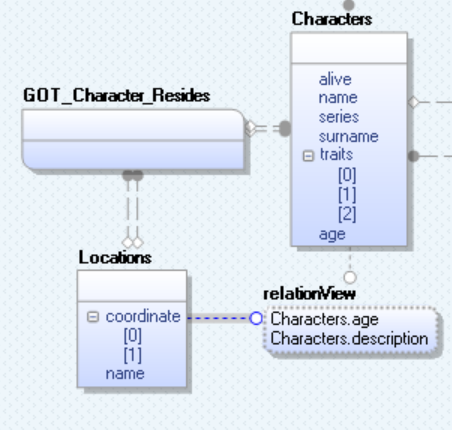

In erwin Data Modeler (DM), click Actions > Reverse Engineer.
The New Model screen appears.
Click Logical/Physical and set Database to ArangoDB.
Click Next.
The Reverse Engineer Process Wizard appears.
Click one of the following options:
-
Database: Use this option to reverse engineer a model from your database.
If you click Database, continue to step 5.
-
Script File: Use this option to reverse engineer a model from a script. Selecting this option enables the File field. Click Browse and select the necessary JSON file.
If you click Script File, see step 13 below and ensure that Document Count or Document % is not set to zero (0).
The Connection tab appears.
Use this tab to connect to the database from which you want to reverse engineer the model. You can connect to the database directly. The following table explains the connection parameters:
Click Connect.
On successful connection, your connection information is displayed under Recent Connections.
Click Next.
The Databases tab appears. It displays a list of available databases.
 .
.This moves the selected databases under Selected Databases.
Click Next.
The Collections tab appears. It displays a list of available collections in the databases that you selected in step 8.
Use the following options:
-
Document Count/Document (%): Use this option to specify the number of documents or percentage of total records that the newly generated model schema would contain.
-
Sampling: Use the Sequence sampling method to sample records in the selected collections. Sampling enables you to retrieve right estimates for accurate collection schema generation.
Under Available Collections, select the collections that you want to reverse engineer. Then, click .
This moves the selected collections under Selected Collections.
Click Next.
The Option Set tab appears. It displays the default option set. You can either use the default or a custom option set.
Click Next.
The Detailed Options tab appears. Set up appropriate options based on your requirement.
Click OK.
The reverse engineering process starts.
Once the process is complete, based on your selections, a schema is generated and a model is created.
ArangoDb has two types of collections:
- Documents: Documents contain data or schema. They are represented by rectangles in the ER diagram. For example, in the above model, female is a document.
- Edges: Edges contain relationship between document data points. They are represented by curved rectangles in the ER diagram. For example, in the above model, imdb_edge_movies is an edge.
The ER diagram displays the relationship between two documents via edges. For example, in the following model Characters is rated to Locations via the GOT_Character_Resides edge.
